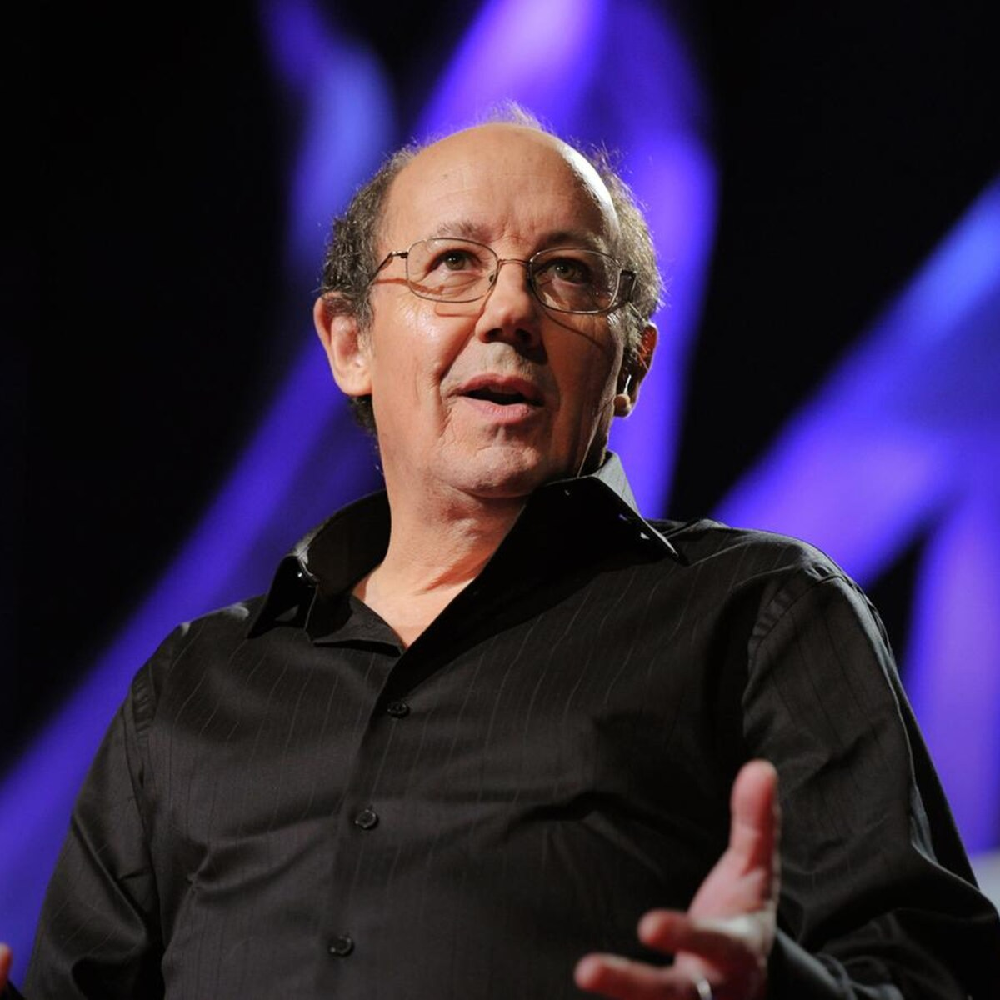

Hoe is Scale Switching ontstaan?
David Christian, de man die het idee van Big History had gemaakt, leerde aan zijn studenten dat ze schalen van tijd en ruimte moesten gebruiken om geschiedenis en nu ook Big History te kunnen bestuderen.
Bij Big History kijk je anders naar geschiedenis dan alleen maar nieuwe keizers aan de macht en de landbouw, je kijkt naar de ruimte maar ook naar stoffen die het ontstaan van het Universum in werk hebben gezet.
Christian vertelde dit aan zijn studenten en leerde ze hiermee uitzoomen en inzoomen op de geschiedenis van eigenlijk alles. Bij verschillende vragen bedenk je dan ‘op welke schaal of perspectief zou ik dit kunnen bekijken en makkelijker kunnen.’
Hij vertelde ook over dat je de scales als een kaart of diagram kan zien vanuit het object waar de vraag over wordt gesteld. Dan zie je veel informatie over het onderwerp van de vraag en haal je er veel meer informatie uit.
